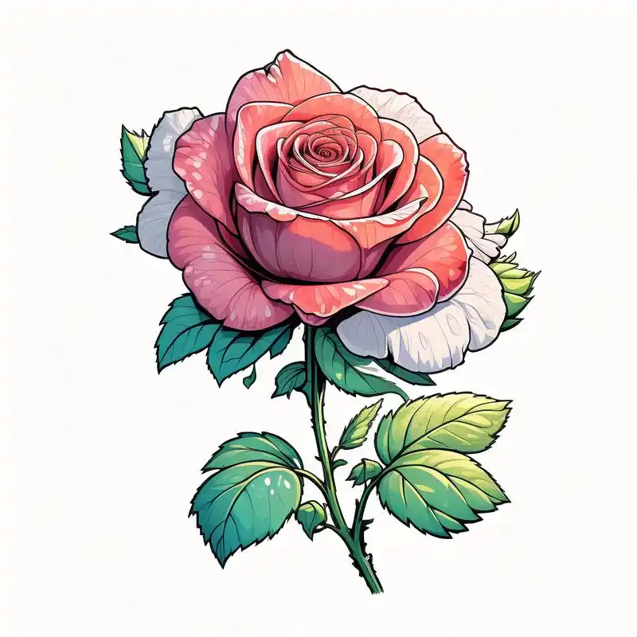

TO 冬日暖杨先生：
展信佳。
今天是2025年2月14日，我们的第一个情人节，我想真挚的情书才是最浪漫的礼物。
可能我词穷写不出什么浪漫的句子，只能用笨拙的话语来表达，也许词不达意，但还是希望你能体会到我的爱意。
遇见你之前，我一直在想，什么样的人会和我过这一生，遇到你之后好似一切有了答案。
我第一次体验这种陌生的情感，却遇上了最高难度的副本，军恋。你知道我不喜欢异地恋，看着心大的我其实只是反应慢，我会焦虑，会迷茫，会没有安全感，会不知如何相处，我本需要很长的熟悉磨合时间，可我们并没有这个时间。但却很奇怪，你说结婚，我内心全然没有半点不愿意，好似认定了一般。都说等到神秘感和新鲜感消失，会产生厌倦，会慢慢看到彼此缺点，可很奇怪，我却相信就算到达感情最低处，我们也不会彼此背弃。也许是不知者无畏，我的后知后觉让我信了你所说出口话中的"大饼"和你未说出口的话中的权衡利弊。我相信我不主动提要求，你也会对我用心，我也相信我的软弱懂事和良善，不会成为你伤害我的理由。
我知道我不是暖心的人，不会夸夸，不会安慰，不会关心，不会说话，如果我让你觉得累了不舒服了，请直接告诉我，不要偷偷给我减分，毕竟我爱你的心是真的。我知道你很忙，但我还是希望你告诉我你在忙，不然我能在心里瞎想一百种你的内心活动。我太喜欢这句话了:“明确的爱，真诚的喜欢，直接的厌恶，站在太阳底下的坦荡，还有被坚定的选择”，这便是最好的爱情诠释吧。
人没有走过他人走过的路，无法有真正的感同身受。我不懂你训练的艰辛，你也不懂我情绪不好时莫名其妙的哭泣。但我会心疼你时常挂着的黑眼圈，你也不会对我的情绪视而不见，这便足矣。我会努力熟悉你，理解你，奔赴你，但我走的慢，希望你多一点耐心，希望你能一直对我真诚坚定，希望你答应过我的话能实现，希望我们在不见面的日子里都能各自奋斗，越来越好。
写在最后，我想告诉你，我一直都在，等你做我一个人的英雄。💖💖💖
遇事不方小姐
